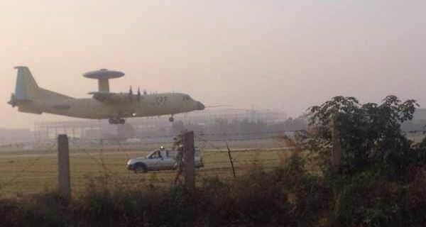

2014-10-30 22:46:00
我在前文《從1996台海危機到東風21D反艦彈道飛彈》曾提到，共軍自1996年台海危機受到美國海軍航空兵前出部署的大刺激之後，臥薪嘗膽，從本土防御出發，經過近岸防御和近海防御，一步一步邁向遠洋防御的戰略方針。十八年後的今天，近海防御的階段任務已基本完成；美國海軍的航母戰鬥群已被成功地“拒止”（Denied）於中國海岸2000公里外，無力對共軍的岸上目標進行打撃。美國軍方當然不會無識於這個發展，其内部對應該如何因應來破解共軍的防御，有非常熱烈的討論。
美軍將共軍的近海防御作戰部署稱為“反介入/區域拒止”（A2/AD，Anti-Access/Area Denial）。在2010年初，東風21D還没有開始作戰部署之前，美國國防部内部的一個智庫，叫Center for Strategic and Budgetary Assessments（CSBA，戰略及預算權衡中心），就已正式提出所謂的Airsea Battle（空海一體戰）建議論文；同年年底，東風21D獲得IOC（初始運作能力），空海一體戰隨即受美國國防部採納為新作戰指導方針。空海一體戰並不是一個全新的概念，它是基於既有的空地一體戰（Airland Battle），針對西太平洋的浩瀚海域改動而成。而空地一體戰是美國在冷戰末期的1982年，針對蘇聯陣營部署在中歐的7萬輛坦克洪流，發展出來的應對之策。它基本上是二戰期間德軍閃電戰（Blitzkrieg）的現代版本，要求戰術空軍在戰事一開始便奪取空優，壓制敵防空力量，以精確打撃消滅敵人的通信指揮中心，再以持續火力消耗對方的機械化攻撃箭頭，為己方陸軍部隊的反撃（Counter-Attack）奠定基礎。冷戰結束之後，1991年的海灣戰争（Gulf War）成為空地一體戰的第一個實験場，證實了現代戰術空軍配備了精確制導武器（Precision-Guided Weapons），能够在短時間内對大規模機械化部隊進行毁滅性的打撃；沙丹.胡笙的消耗戰（War of Attrition）戰略，雖然在二戰中幫助蘇軍打敗德軍，在現代背景下，已經完全過時了。當時中共陸軍的戰略指導原則，也是師承蘇聯的消耗戰，其部隊的機械化程度，還遠不如胡笙的共和國衛隊（Republican Guards），因此海灣戰争對中共陸軍而言，就如同1996年台海危機對中共海空軍一様，也是平地驚雷、醍醐灌頂，成為其後努力現代化的動力和標的。
空海一體戰，如同空地一體戰一様，强調戰術空軍先發制人的打撃能力，要求美國空軍的隱身飛機深入中共防御縱深，配合巡弋飛弹，清掃共軍的遠程防御力量，尤其是雷達站和東風21D發射車。一旦共軍的防御出現了漏洞，美國海軍的航母戰鬥群就可以蜂湧而上，徹底殲滅中共海空軍。但是空海一體戰的戰場是浩瀚的西太平洋，而空地一體戰則是為中、西歐設計的，两者在戰術條件上恰是南轅北轍、完全相反。中、西歐是全世界基礎設施最完備、密度最高的地區，到處都有機場、高速公路和雷達站；因此為空地一體戰所開發的武器，例如F-22隱身戰鬥機，航程很短，作戰半徑只有760公里，比上一代的艦載機還要短腿。可是在西太平洋，美軍在第一島鏈只有琉球一個主要空軍基地，在開戰頭一個小時必然會遭受共軍飛弹的飽和打撃，任何部署在那裡的戰機即使没有馬上被摧毁，也會因為後勤系統的損失而失去戰力。後一線的基地是遠在3000公里外的關島，能從那裡直接發起攻撃的只有B2和B1B這两種戰略轟炸機；其他飛機必須依賴加油機，而在中國大陸海岸線500公里外盤旋的加油機就和美國感恩節前的火雞一様，只有等着被燒烤的份。此外共軍的新型東風26中程弹道飛弹就是為了關島基地量身設計的，以致美國在2013年開始把部分兵力繼續後移到距離中國大陸海岸5000公里的澳洲達爾文基地。巡弋飛弹也有同様的問題，能安全逼近到中國大陸海岸邊1000公里，亦即戰術戰斧飛弹（Tactical Tomahawk Missile）的射程以内的發射平台只有原本是戰略武器的俄亥俄级（Ohio Class）核子動力潜艇。現在共軍的第二代預警機KJ-500也和J-20一様，在閻良接受國家鑑定，即將大量部署。KJ-500用中型Y-9為載機搭載了KJ-2000大型預警機上的L波段AESA雷達的新改型，偵測能力遠超過美製的E-2和E-3，即使B2轟炸機能突破它的封鎻，B1B和戰斧飛弹是不可能逃過它的法眼的，而美國只有21架B2，損失一架就少一架。美國空軍現在積極發展作戰半徑5000公里的B-3轟炸機，美國海軍則投資在X-47B上，準備開發作戰半徑超過2000公里的X-47C（Grumman公司競標J-UCAS，Joint Unmanned Combat Air Systems的型號），就是這個原因。而且最近幾年美國預算困難，唯一追加預算以便快速生產部署的是新加裝了巡弋飛弹發射筒的維吉尼亞級（Virginia Class）核子動力攻撃潜艇和升級為AESA雷達並裝備了具有反導能力的標準3型飛弹的伯克三型驅逐艦，其背後的考量應該也是很明顯的。

KJ-500本週在閻良的照片。載機是運9型運輸機，從運8改良而來，而運8是蘇製AN-12的共軍版
其實空海一體戰是在共軍占據了天時地利的條件，已經達成了毛澤東所謂“戰略攻勢、戰術守勢”的背景下，仍然一意孤行，强迫採取戰術攻勢作戰的產物。這在美國的經濟和科技獨步全球的時代，或許是可以達成的理想，在預算緊縮而且重工業開始落後於中共的今日，就顯得不切實際了。尤其是冷戰結束前後留下來的幾個最重要的武器系統，如F-22、F-35、DDG-1000（又稱Zumwalt Class驅逐艦）和福特級（Ford Class）航空母艦，在西太平洋對抗共軍的A2/AD都是牛頭不對馬嘴，力不從心的感覺十分明顯。隨着共軍的下一波海空軍裝備（如KJ-500、J-20、054B全電反潜護衛艦和055級巡洋艦）在未來幾年逐步開始服役，空海一體戰的原始邏輯越來越顯得牽強。美軍的各級高層指揮官也開始注意到這問題：上個月，美國海軍將X-47C的任務目標從搜索打撃地面車輛改為反艦攻撃，也就是已經了解到即使一架隱身無人機有了2000公里的作戰半徑，要安全地進入中國大陸上空去搜索東風21D的發射車，還是不可能成功的。上個禮拜，美國國防部長黑格（Hagel）在美國陸軍協會年度研討會與高級將領會談時，語驚四座，建議從試圖撃敗A2/AD改為自己也搞A2/AD；這是有它的道理的，畢竟美國的一個很大的戰略優勢是他有幾百個海外軍事基地，控制着全球所有海運要衝，所以他有那個條件來模仿共軍的“戰略攻勢、戰術守勢”思想。不過如果美國放棄在東亜的戰術攻勢作戰，必然代表着賦予共軍更大的活動自由。中共並不尋求與美國全面對抗，所以美國若是拋棄空海一體戰，將是一個雙赢的局面。如果美軍的A2/AD是用來輔助空海一體戰，那麼就必須前出部署，反而給予共軍殺傷美軍有生力量的良機。共軍只花了18年，就從不入流的海空軍發展成美國的第一大威脅；時間不在美國的那一邊。